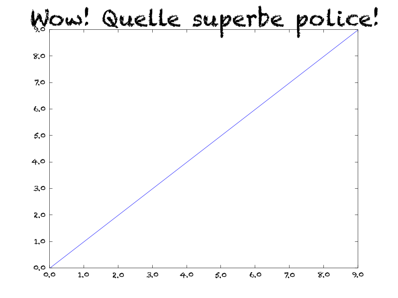

Il est possible d'utiliser n'importe quelle police dans Matplotlib. Ce qui est un peu pénible, c'est de spécifier le type de police pour chaque élément du graphique. Le code ci-dessous illustre comment s'y prendre.
import matplotlib.pyplot as plt import matplotlib.font_manager as fm font = fm.FontProperties( family = 'Chalkduster', fname = '/Library/Fonts/Chalkduster.ttf') plt.plot(range(10)) ax = plt.gca() ax.set_yticklabels(ax.get_yticks(), fontproperties=font) ax.set_xticklabels(ax.get_xticks(), fontproperties=font) plt.title('Wow! Quelle superbe police!', size=32, fontproperties=font) plt.savefig('custom_font_matplotlib.png') plt.show()
Le résultat est l'image suivante.
